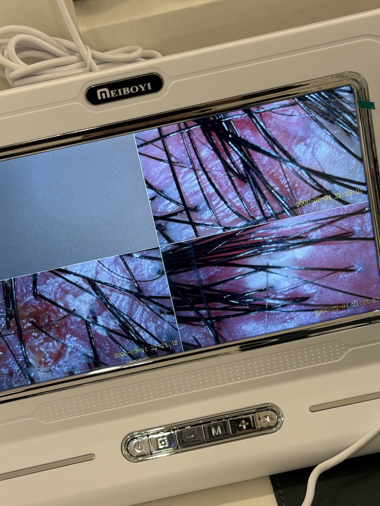
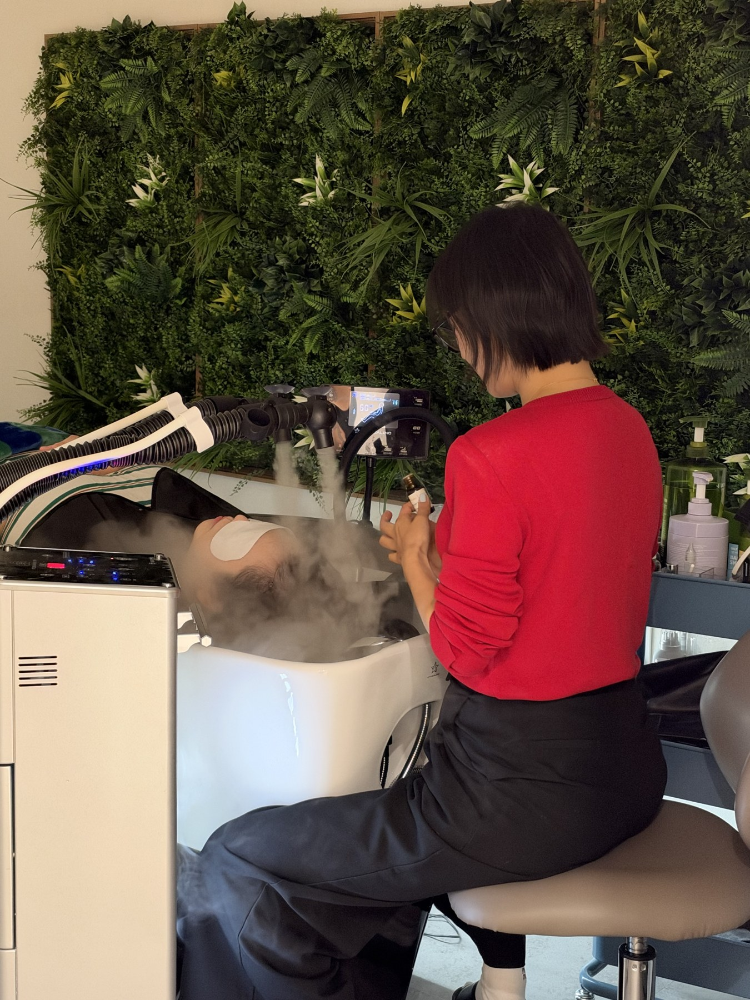

지금의 두피를 살핍니다.
각질, 유분, 붉어짐 등 눈에 보이는 상태와 평소 느낀 불편함을 함께 확인합니다.
거제 두피케어 · 헤드스파 / 이엘원장 모엘스튜디오
눈에 잘 보이지 않아 미뤄왔던 두피 고민,
모엘에서 나에게 맞는 관리부터 시작해 보세요.
모엘 시그니처 솔루션 케어 · 첫 체험가
70,000원55,000원
두피 냄새·피지·각질 고민, 산뜻한 시작
01 / 내 이야기 같다면
검은 옷 위의 각질, 오후만 되면 올라오는 유분,
자꾸 손이 가는 가려움. 익숙하다고 편한 건 아니니까요.
이 중 하나라도 해당된다면 체크해 보세요.
선택한 고민을 예약 상담 때 함께 알려주세요.
두피 고민을 정리하기 위한 참고 항목이며, 의학적 진단이 아닙니다.
Welcome to Moël
02 / 모엘이 제안하는 시작
안녕하세요.
모엘스튜디오 이엘원장입니다.
각질이 보인다는 이유만으로
어떤 관리를 받을지 결정하기는 어렵습니다.
유분과 붉어짐, 평소의 불편함과 세정 습관까지
함께 살펴봐야 할 이야기가 있으니까요.
모엘에서는 먼저 듣고, 두피 상태를 살핀 뒤
왜 이 관리가 필요한지 설명합니다.
고객님이 이해한 다음, 관리 방향을 함께 정합니다.
메뉴를 고르기 전에,
내 두피를 이해하는 시간이 먼저입니다.
각질, 유분, 붉어짐 등 눈에 보이는 상태와 평소 느낀 불편함을 함께 확인합니다.
어떤 프로그램을 왜 제안하는지, 지금의 고민과 연결해 이해할 수 있도록 안내합니다.
한 번의 관리로 모든 것이 달라진다고 약속하기보다, 집에서의 관리와 다음 계획을 이야기합니다.
상담에서 관리까지

언제부터 불편했는지, 최근 염색·펌을 했는지, 평소 관리 습관은 어떤지 이야기합니다.
오늘의 컨디션을 확인하고, 나에게 필요한 관리 방향과 프로그램을 안내합니다.
세정과 두피 케어, 마무리까지. 진행 중 불편한 부분은 편하게 말씀해 주세요.
케어 후 컨디션을 확인하고, 집에서의 관리 방법과 이후 계획을 상담합니다.
고민에 맞춘 두피케어
두피관리는 모두 똑같지 않습니다.
지금 내 고민에 맞는 케어를, 모엘 이벤트로 만나보세요.

MOËL STUDIO
모엘의 실제 공간과 관리 사진입니다.
사진을 누르면 크게 보실 수 있습니다.
03 / 예약을 망설이는 이유
기대되는 점도, 걱정되는 점도.
결정하기 전에 확인해 주세요.
한 번의 관리로 모든 고민이 해결된다고 약속하지 않습니다. 현재 컨디션을 확인하고, 집에서의 관리와 이후 계획까지 함께 이야기합니다.
불편한 부위와 최근 염색·펌 일정을 먼저 알려주세요. 현재 두피 상태를 살핀 뒤 케어 가능 여부와 방향을 안내합니다.
메뉴를 미리 정하지 않으셔도 됩니다. 고민을 듣고 관리 방향을 설명한 뒤, 프로그램 구성과 금액을 확인하실 수 있습니다.
이름보다 관리 과정을 확인해 보세요. 내 두피 상태를 먼저 살피는지, 어떤 관리가 필요한지 설명하는지, 방문 후 관리 방법까지 안내하는지가 모엘이 중요하게 생각하는 기준입니다.
모엘의 탈모 집중 케어는 두피 환경을 관리하는 미용 서비스입니다. 탈모를 진단하거나 발모·치료 효과를 약속하지 않습니다. 현재 상태와 받고 있는 관리가 있다면 예약 상담에서 알려주세요.
최근 염색·펌·다운펌 날짜와 현재 두피 상태를 예약 시 말씀해 주세요. 다음 시술 일정이 있다면 함께 확인하고 방문 일정을 상담합니다.
선택한 프로그램과 현재 두피 컨디션에 따라 준비 사항과 소요 시간이 달라질 수 있습니다. 예약 상담에서 방문 전 샴푸 여부와 시간을 안내받아 주세요.
04 / 이제, 내 두피 이야기
각질이 신경 쓰이는지, 가려움이 반복되는지.
지금 가장 불편한 것부터 편하게 알려주세요.
어떤 관리가 맞을지 함께 찾아가는 것부터 시작하겠습니다.
상담 시 두피 고민 · 최근 염색/펌 일정 · 희망 방문일을 알려주세요.
이엘원장 모엘스튜디오 · 거제
거제 모엘스튜디오
정확한 주소·주차는 예약 시 안내해 드립니다.
10:00–20:00
야간 예약은 별도 문의
최근 염색·펌 일정과 두피 고민을 알려주세요.
가능 시간과 프로그램은 상담에서 확인해 주세요.
좋다는 샴푸도 써봤는데,
무엇을 더 할지보다, 지금 내 두피가 어떤 상태인지부터.왜 불편함은 다시 돌아올까요?
모엘의 두피케어는 그 질문에서 시작합니다.